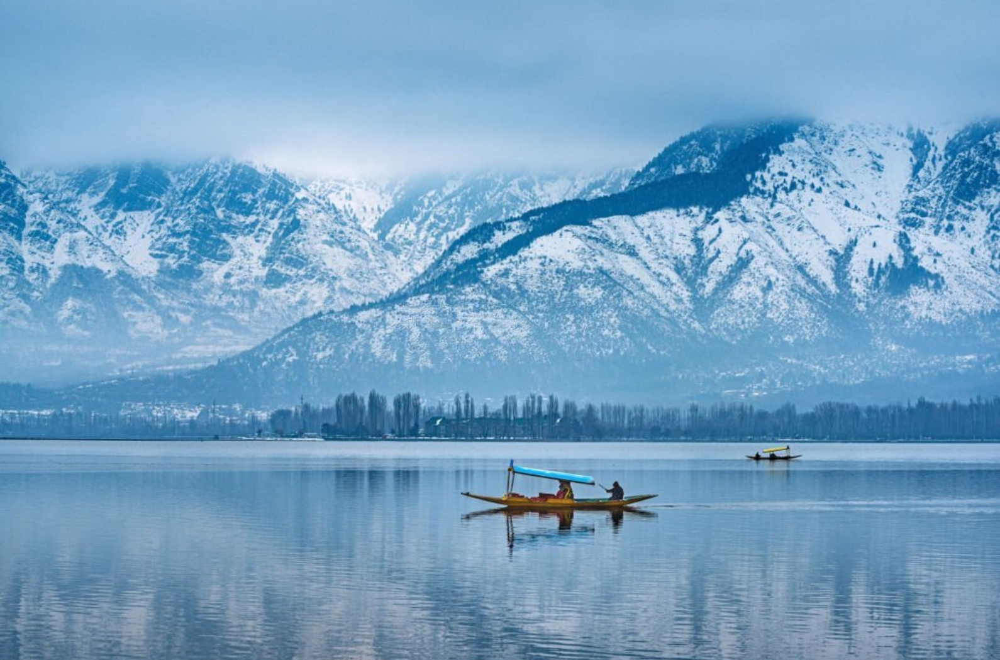
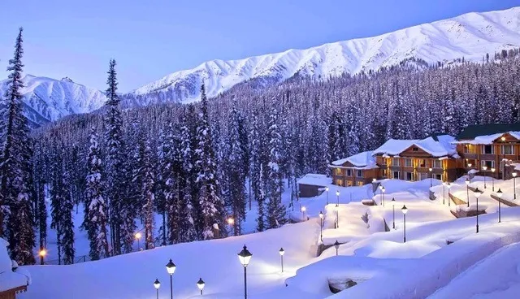
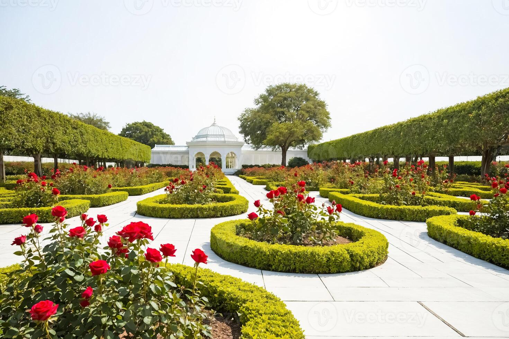

The Paradise on Earth

Dal Lake in Srinagar is famous for its beautiful shikara rides, floating markets, and houseboats. It reflects the majestic Himalayas and is one of the most iconic attractions.
The lake represents the cultural heart of Kashmir, where traditional wooden houseboats and vibrant markets create a peaceful yet lively atmosphere.

Gulmarg is a popular hill station known for snow activities, skiing, and the Gulmarg Gondola — one of the highest cable cars in the world.
Surrounded by snow-covered mountains and green meadows, Gulmarg attracts adventure lovers and nature enthusiasts throughout the year.

The Mughal Gardens showcase Persian-style architecture with flowing fountains, terraced lawns, and colorful flowers built during the Mughal era.
These gardens reflect the artistic vision of Mughal emperors and highlight the region’s historical elegance and love for nature and symmetry.